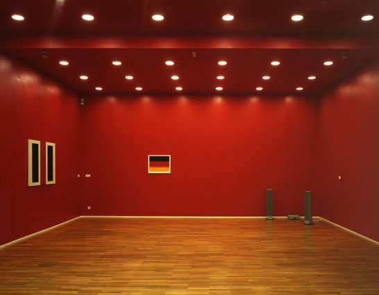
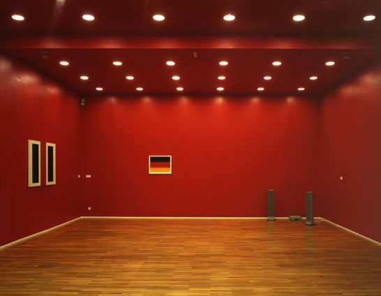

Galerie Anselm Dreher / Gerold Miller

Eingangsraum mit einem Bild von John McLaughlin (links),
einer Klanginstallation von Peter Roehr (rechts) und der Arbeit
auf Papier
"Farbverlauf", 2002, 54x67.5cm, Edition 7 Expl.


Galerie Anselm Dreher / Gerold Miller

Eingangsraum mit einem Bild von John McLaughlin (links),
einer Klanginstallation von Peter Roehr (rechts) und der Arbeit auf Papier
"Farbverlauf", 2002, 54x67.5cm, Edition 7 Expl.